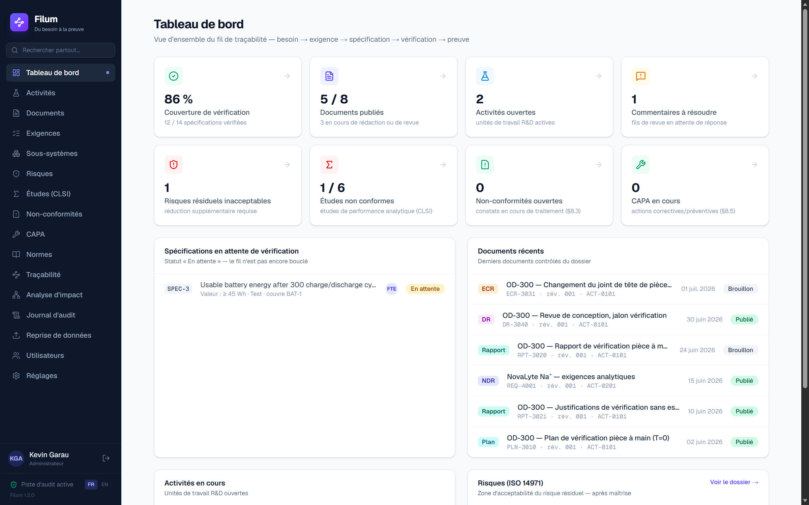
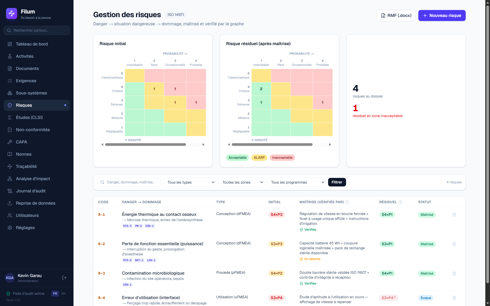
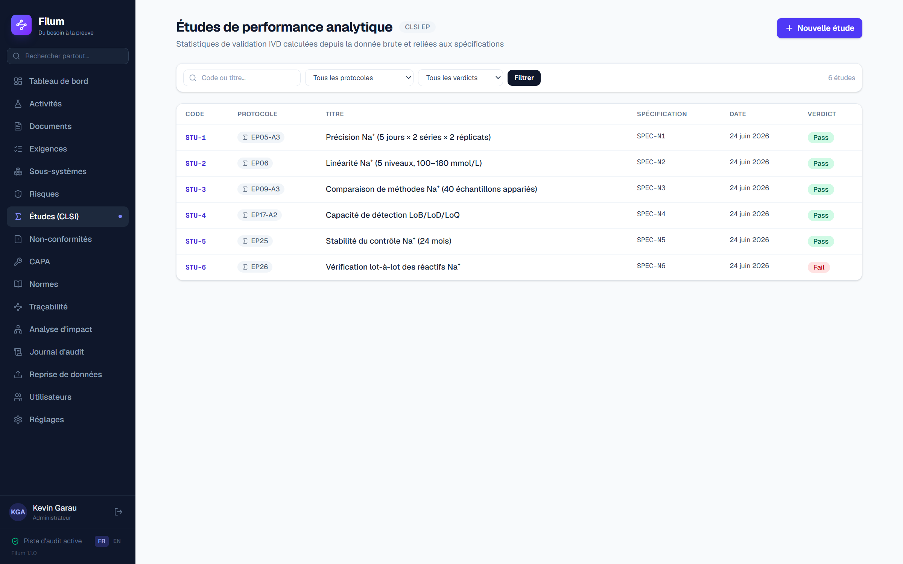
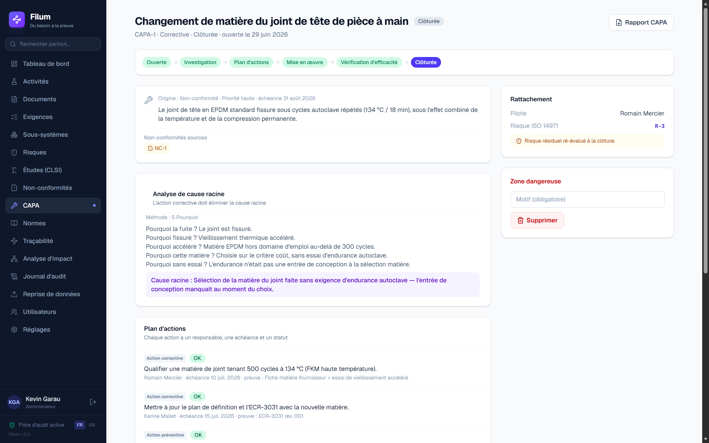

Traçabilité & conformité — R&D de dispositifs médicaux
Filum relie besoins, exigences, essais, risques et preuves dans un graphe de traçabilité vivant — et génère NDR, DHF, rapport de gestion des risques et rapports CAPA à la demande. Risques ISO 14971, validation de méthodes CLSI et NC/CAPA vivent sur le même fil : vous saisissez le lien une fois ; les manques sont signalés automatiquement.

La cause racine
L'idée clé
Cliquez sur chaque maillon pour voir ce que Filum en fait.
Le socle
Toutes les captures proviennent de l'application en fonctionnement — aucun montage. Deux programmes de démonstration : OD-300 « Orthodrive » (perceuse chirurgicale) et NovaLyte NL-100 (analyseur d'électrolytes, diagnostic in vitro), dont viennent les écrans de validation analytique.
Cliquez sur l'image pour l'agrandir
Les modules
Risques, validation de méthodes et CAPA ne sont pas des annexes : ils vivent sur le même fil que vos exigences — et se vérifient les uns les autres.

Registre FMEA (danger → situation dangereuse → dommage), matrice 5×5 avec zones Acceptable / ALARP / Inacceptable, risque initial face au résiduel. Et surtout : une maîtrise n'est « vérifiée » que lorsque les spécifications et essais qui la portent sont clos favorablement — une preuve du graphe, pas une case cochée.
Sur OD-300 : R-1 « énergie thermique » maîtrisé et vérifié ; R-4 « erreur d'utilisation » encore en cours — signalé tel quel.

Importez le CSV du banc : le moteur statistique intégré déroule les protocoles CLSI — EP05 précision (ANOVA), EP06 linéarité, EP09 comparaison de méthodes (Bland-Altman, Passing-Bablok), EP17 LoB/LoD/LoQ, EP25 stabilité, EP26 lot-à-lot — et rend un verdict Conforme / Non conforme sur critère a priori. L'étude vérifie une spécification : la preuve tombe dans la matrice.
Sur NovaLyte : 6 spécifications, 6 études STU-1 à STU-6 — 5 conformes, 1 échec lot-à-lot (EP26) visible immédiatement.

Un essai en échec, une spécification NOK, un risque inacceptable : la non-conformité naît du graphe, avec sa disposition signée. L'escalade CAPA se justifie sur le risque, et le cycle est verrouillé — pas de plan d'actions sans cause racine, pas de clôture sans vérification d'efficacité prouvée par un essai repassé Pass, contrôlée par un vérificateur indépendant.
Sur OD-300 : l'essai VER-3 en échec a donné lieu à NC-1, escaladée en CAPA-1 (cause racine : élastomère de joint inadapté) — clôturée EFFICACE, SPEC-5 repassée NOK → OK automatiquement.
Assistant IA
Chaque texte porte un badge « Origine : IA » avec le modèle utilisé. Rien d'anonyme.
L'IA rédige uniquement depuis le graphe et cite chaque affirmation : [REQ-3001], [SPEC-5]…
Un brouillon n'entre dans un document qu'après validation explicite, nominative et horodatée.
L'IA constate l'état des données. La décision — et la signature — restent humaines.
Conformité du logiciel lui-même
Un logiciel de conformité qui demande qu'on le croie sur parole ne vaut rien. Chacun des mécanismes ci-dessous se contrôle par un tiers — souvent sans même ouvrir Filum.
Chaque entrée porte l'empreinte de la précédente. Modifier ou supprimer une ligne directement dans la base rompt le maillon de toutes les suivantes, et la vérification dit à quel rang. Le chaînage détecte, il n'empêche pas — c'est écrit tel quel dans l'écran.
Un dossier compressé : les enregistrements approuvés octet pour octet, leurs empreintes, et une ancre unique qui les couvre toutes. Votre auditeur la contrôle avec sha256sum, sur n'importe quelle machine, dans dix ans — sans le logiciel, sans nous, sans licence.
L'ancre de l'archive est contresignée par l'autorité d'horodatage RFC 3161 que vous désignez. Une chaîne recalculée après coup ne redonnera pas la tête horodatée : l'altération passe de détectable à indéniable.
Filum ne supprime jamais un enregistrement figé et n'applique aucune purge à l'échéance. Vous déclarez votre durée, ce qui la fonde et la référence de votre procédure. Une conservation légale bloque toute suppression, motif écrit obligatoire.
Un administrateur émet un jeton à usage unique ; son titulaire choisit lui-même son secret. Qui saisit le mot de passe d'autrui détient les deux composants de sa signature — exactement ce que le 21 CFR 11.200(a)(3) veut empêcher.
Le mot de passe est redemandé à chaque signature, et seul le signataire désigné peut apposer la sienne. Administrateur, approbateur, éditeur, lecteur : la garde est au serveur, pas dans un bouton grisé.
La certification du §11.100(c) engage l'entité juridique dont les collaborateurs signent, par lettre manuscrite adressée à la FDA. Aucun éditeur de logiciel ne peut la porter à votre place, et celui qui le prétend vous vend un risque.
Ce que nous livrons, en revanche : une matrice clause par clause en trois colonnes — ce que fait le logiciel, ce qui reste à votre charge, ce qui est hors périmètre, points ouverts nommés compris ; une note d'intégrité des données avec un protocole que votre auditeur peut jouer pour la falsifier ; et un pack de validation : protocole IQ, dossier de validation, exigences et cas de test exécutables dans votre environnement.
Ce protocole, nous l'avons exécuté sur notre propre logiciel. Il a trouvé 7 défauts, tous fermés. Lire l'étude de cas → · Et ce qui empêche la prochaine de passer : la validation continue →
Périmètre
Une démonstration faite à quelqu'un qui cherchait autre chose coûte deux heures aux deux parties. Autant le dire ici. Aucune ligne de la colonne de droite n'est assortie d'une échéance : nous ne vendons pas ce qui n'existe pas.
Filum ne vous conviendra probablement pas si vous cherchez un système qualité complet (formation, fournisseurs, réclamations, audits) · votre dispositif est d'abord un logiciel et vous attendez une chaîne IEC 62304 outillée · il vous faut une intégration PLM, ERP ou ALM · vous voulez un SaaS multi-locataire administré par l'éditeur · vous attendez d'un fournisseur qu'il se déclare « conforme 21 CFR Part 11 ».
La note de périmètre développe chaque ligne, énonce les trois choix de conception qui expliquent les absences, et dit ce qui reste à la charge de votre organisation. Elle est faite pour être lue avant de s'engager, pas après. Aucun formulaire, aucune adresse à laisser :
Positionnement
| V&V matérielle pilotée par les données d'essai | Graphe fin exigence → preuve | Risques & CAPA vérifiés par le graphe | Dossier auto-compilé (DHF) | Simplicité & prix PME | |
|---|---|---|---|---|---|
| eQMS généralistes (Greenlight Guru, Qualio…) | — | — | partiel | partiel | — |
| ALM / exigences (Polarion, Jama…) | — | ✓ | — | — | — |
| Plateformes logiciel régulé (Ketryx…) | — | ✓ (code) | partiel | partiel | — |
| Filum | ✓ | ✓ | ✓ | ✓ | ✓ |
Mécanique et logiciel embarqué (IEC 62304) vivent sur le même graphe — sans silo.
Questions fréquentes
Aujourd'hui, chez vous : Filum s'installe en local ou sur votre serveur — la base est un fichier unique que vous sauvegardez comme vous l'entendez. Une offre SaaS hébergée (UE) arrive avec la V1 ; l'export libre des données restera la règle.
Filum ne l'héberge jamais : la bibliothèque contient uniquement des métadonnées (code, titre, description d'usage, lien officiel). Vous consultez le texte dans les copies que votre entreprise a achetées — le droit d'auteur des organismes est respecté par construction.
Le pack de validation existe et vous est remis : protocole IQ destiné à votre informatique ou à votre infogérant, dossier de validation reprenant les exigences du logiciel avec leur criticité justifiée, et une suite de qualification opérationnelle exécutable — ses cas appellent les mêmes fonctions que l'application, pas des copies, ce qui est la seule façon qu'un rapport dise quelque chose du logiciel réellement livré. Vous la rejouez chez vous, après chaque montée de version.
Ce qui reste à votre charge, et que nous ne pouvons pas faire à votre place : la décision de criticité du système, la qualification de performance dans vos conditions réelles, et votre politique de revalidation.
Vous produisez une archive d'inspection : un dossier compressé contenant les enregistrements approuvés octet pour octet, la liste de leurs empreintes SHA-256, la piste d'audit, et une ancre unique qui couvre le tout. L'inspecteur la vérifie avec les outils standard de son système d'exploitation — sans Filum, sans licence, sans nous. Cette ancre peut être contresignée par l'autorité d'horodatage RFC 3161 de votre choix : une valeur recalculée après coup ne redonnera jamais celle qui a été horodatée.
Le corollaire honnête : le chaînage détecte une altération, il ne l'empêche pas. Qui a un accès direct au fichier de base peut écrire hors de l'application — c'est l'horodatage tiers, et la restriction d'accès qui relève de votre infrastructure, qui referment cette porte.
Non. Elle ne rédige que depuis les données de votre graphe, cite ses sources, écrit « à compléter » quand l'information manque — et rien n'entre dans un document sans votre validation nominative. Aucune décision réglementaire n'est automatisée.
Non — c'est l'inverse. Filum génère des .docx structurés comme vos gabarits (bloc titre, approbations, historique de révision, Design Input/Output…). Vous continuez à livrer du Word ; vous arrêtez juste de le ressaisir.
Le modèle visé : self-service, prix transparents, sans engagement pluriannuel — à l'opposé des eQMS traditionnels. Contactez-nous pour le programme pilote : les premiers partenaires bénéficient de conditions fondatrices.
Programme pilote ouvert — instruments chirurgicaux, implants et dispositifs de diagnostic in vitro.